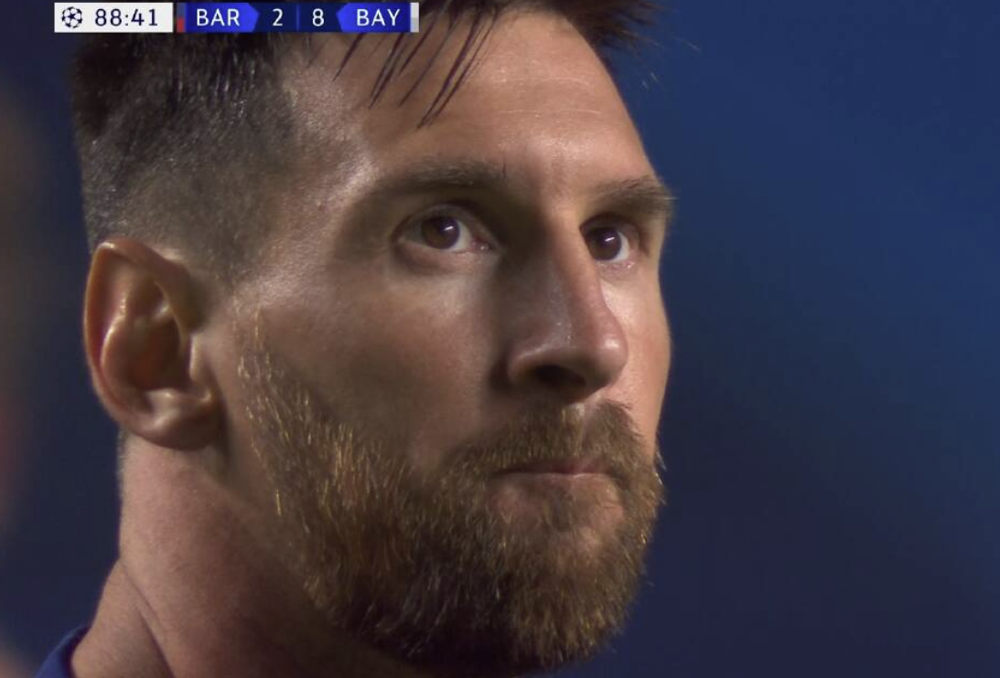
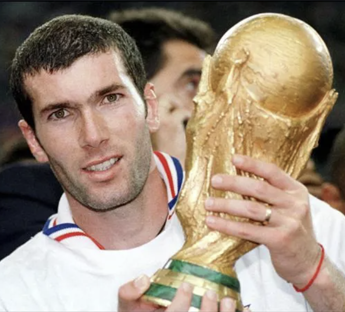
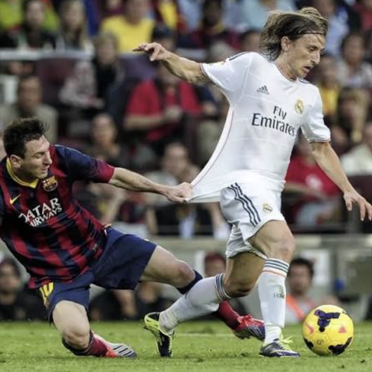
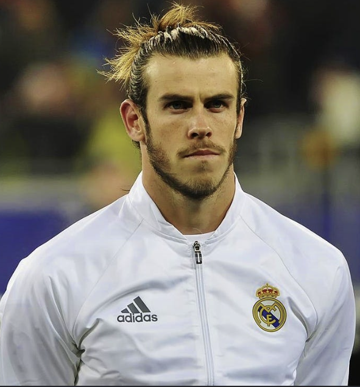

This ranking is my personal opinion.
RONALDO IS NUMBER ONE!
He doesn’t chase records, records chase him. 5 Ballon d’Ors, conquered England, Spain and Italy, all-time Champions League top scorer, all-time men’s international top scorer, led Portugal to international trophies, and closing in on 1,000 career goals. I don’t see any player ever doing what Cristiano Ronaldo has done in his career. 🐐
This is not a link to change my mind.

Messi has more Ballon d’Ors and a World Cup, but he couldn’t prove himself across as many leagues, systems, managers, and styles. Messi mastered one environment, while Ronaldo conquered every environment. That’s why I put Messi below Ronaldo. And if anyone thinks a World Cup plus a Ballon d’Or automatically makes someone the greatest, remember R9 has both too, yet that alone doesn’t settle the GOAT debate.
Messi missed, Ronaldo didn't

Big-game influence, elegance, control, and delivering on the biggest stages. He won the World Cup, Euros, Champions League, and Ballon d’Or, and in his prime he could completely control a match in a way very few players ever could. He also proved himself as a coach, winning three Champions League titles back-to-back.

First midfielder to win the Ballon d’Or in the Messi-Ronaldo era, led Croatia to a World Cup final, and dominated Europe for years. Many would choose Xavi over Modrić, but while Xavi was brilliant, Modrić proved he could carry more responsibility for both club and country.
The next pick is staying on this list.

It’s my opinion and you can’t change it. From Southampton and Tottenham to becoming a Real Madrid legend, winning 5 Champions Leagues and delivering unforgettable moments on the biggest stages. That 2014 Copa del Rey run against Barcelona is a memory I’ll never forget. Bale wasn’t just great to me; he was part of why I fell in love with football.
That is my top five. This border did not make the team.